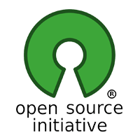

Reborn is an operating system -- software that runs your computer, like Microsoft's Windows, Apple's Mac OSX or Google's ChromeOS. Reborn OS is a distribution (version) of Linux, a dependable, secure, capable, and modern computer system that rivals all others in popularity and actual use.
Unlike those other three, Linux is a major operating system that is used:
- on most of the world's fastest and most powerful supercomputers
- on many of (if not most of) the computers that make up the backbone of Internet
- and on corporate servers that require stability and reliability
The operating system is more secure, and better supported than the operating system pre-installed on most home computer hardware today.
Using Reborn provides you with the freedom to run a complete, full-featured operating system, pre-configured with most, if not all, of the applications you will need for your daily computing, or to change anything about the way it looks, the way it works, or the applications it runs to suit your taste.
What is Reborn OS?
Open Source
Open source software is software that can be freely used, changed, and shared (in modified or unmodified form) by anyone. In a nutshell Reborn is free, in the truest sense of the word.
Although you will find some versions (distributions) of Linux for purchase, the vast majority are provided free of charge, like Reborn. Open Source software is licensed in a way that allows anyone to give it away for free, no strings attached. For example, the licence gives any member of the user community the freedom to use Linux for any purpose, to distribute, modify, redistribute, or even sell the operating system. If you do modify and then redistribute Linux with your modifications, you are required by the licence to submit your modifications for possible inclusion into future versions. There is no guarantee that this will ever happen, but if you have made it better, then the chances are high that your changes might be included in the next release of Reborn.
Many of the users of Linux are corporations that use the operating system to run their businesses, or include it within their products. Many of these corporations provide fixes and new features for Linux as they use the software for their businesses. These improvements are given back to the Linux community and Reborn improves as a result. This is how we can continually improve and grow without having to charge our users money.
Unlike Windows, and OSX, Linux is not created and supported by just one company. It is supported by Intel, Redhat, Linaro, Samsung, IBM, SUSE, Texas Instruments, Google, Canonical, Oracle, AMD, and Microsoft. Over 4,000 developers contributed to Linux over the last 15 years.
Whether you are a home user of Reborn, a Reborn software or application developer, or an employee of an organization that uses the operating system, you are a member of the Linux and Open Source communities and benefit from the efforts of the developers who contribute to Reborn and its related projects, Linux, MATE, and Arch. Members of the community can and do run Linux on almost any hardware, from the prettiest Macbook to the cheapest netbook, from the newest Chromebook to some very old machines designed for Windows, and from the most powerful Internet servers to the smallest smart thermostat.